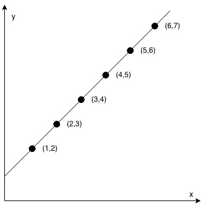
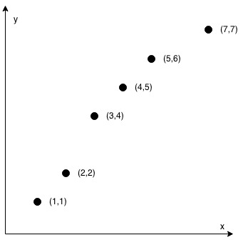

1232. 缀点成线
前两点定基准方向，其余各点用叉积判共线：(xi−x1)·dy == (yi−y1)·dx，乘法形式避免斜率除零。
思路
- 所有点共线 ⟺ 每个点与基准点连线的方向都等于前两点的方向
dx = x2−x1、dy = y2−y1。 - 共线写成交叉相乘：
(xi−x1)·dy == (yi−y1)·dx；不要写斜率除法，竖线（dx = 0）会除零。 - 任一点不满足立即
false；只有 2 个点时循环不执行，直接true。 - 坐标绝对值 ≤ 10⁴，乘积最大 4×10⁸，
int装得下。
图解
最优解
1class Solution {2 public boolean checkStraightLine(int[][] coordinates) {3 // 基准方向：取前两点连线4 int dx = coordinates[1][0] - coordinates[0][0];5 int dy = coordinates[1][1] - coordinates[0][1];6 for (int i = 2; i < coordinates.length; i++) {7 // 叉积判共线：(xi−x1)·dy == (yi−y1)·dx，乘法形式不用除斜率，竖线也不会除零8 if ((coordinates[i][0] - coordinates[0][0]) * dy9 != (coordinates[i][1] - coordinates[0][1]) * dx) {10 return false;11 }12 }13 return true;14 }15}题目
给定一个整数数组 coordinates ，其中 coordinates[i] = [x, y] ， [x, y] 表示横坐标为 x、纵坐标为 y 的点。请你来判断，这些点是否在该坐标系中属于同一条直线上。
示例 1：

输入：coordinates = [[1,2],[2,3],[3,4],[4,5],[5,6],[6,7]] 输出：true
示例 2：

输入：coordinates = [[1,1],[2,2],[3,4],[4,5],[5,6],[7,7]] 输出：false
提示：
2 <= coordinates.length <= 1000coordinates[i].length == 2-104 <= coordinates[i][0], coordinates[i][1] <= 104coordinates中不含重复的点
题面取自力扣当前版本。
数据快照 2026-11-04。题面版权归力扣所有，本站点仅供本人学习使用，请勿对外发布。